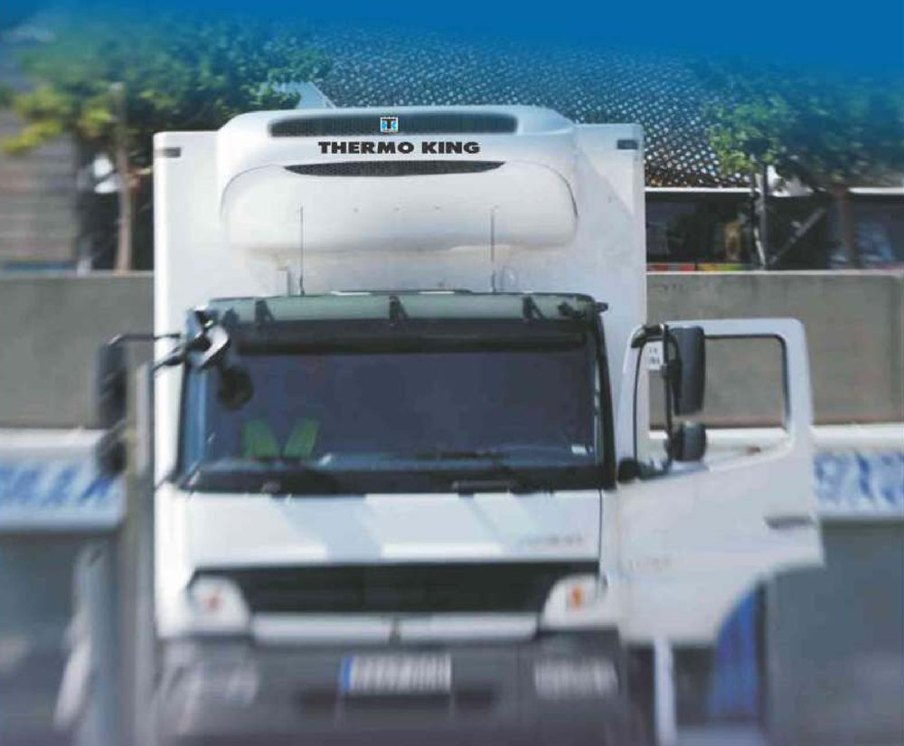
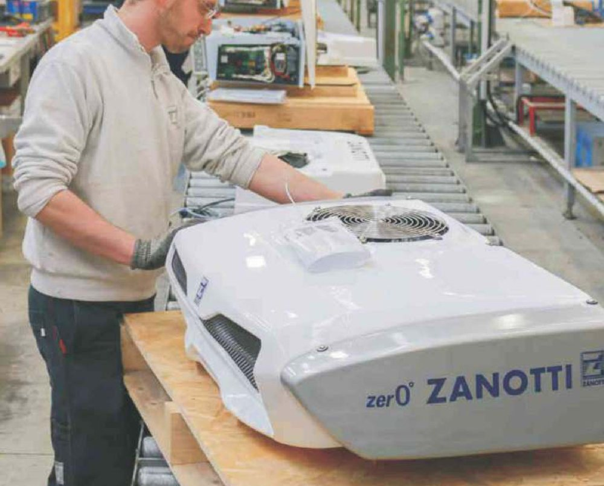
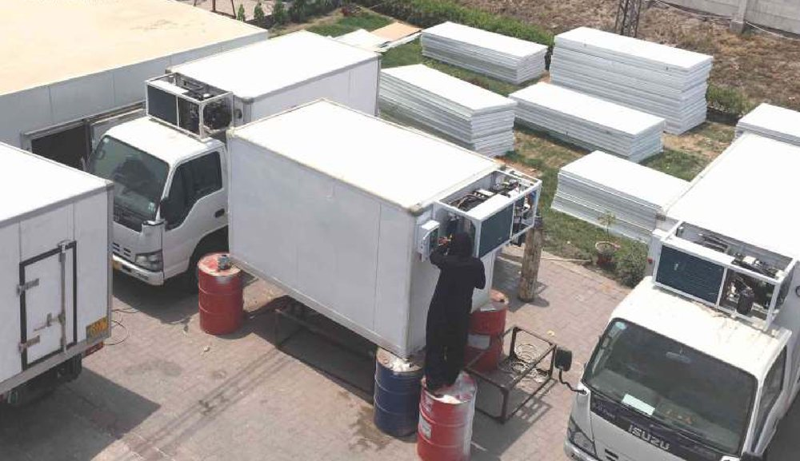
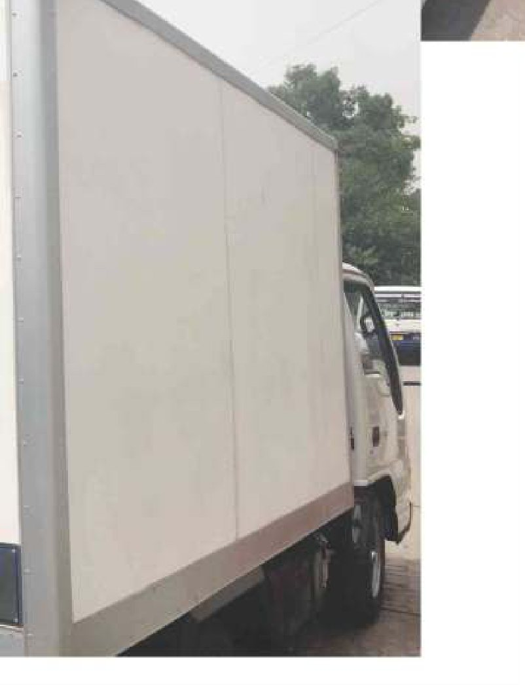
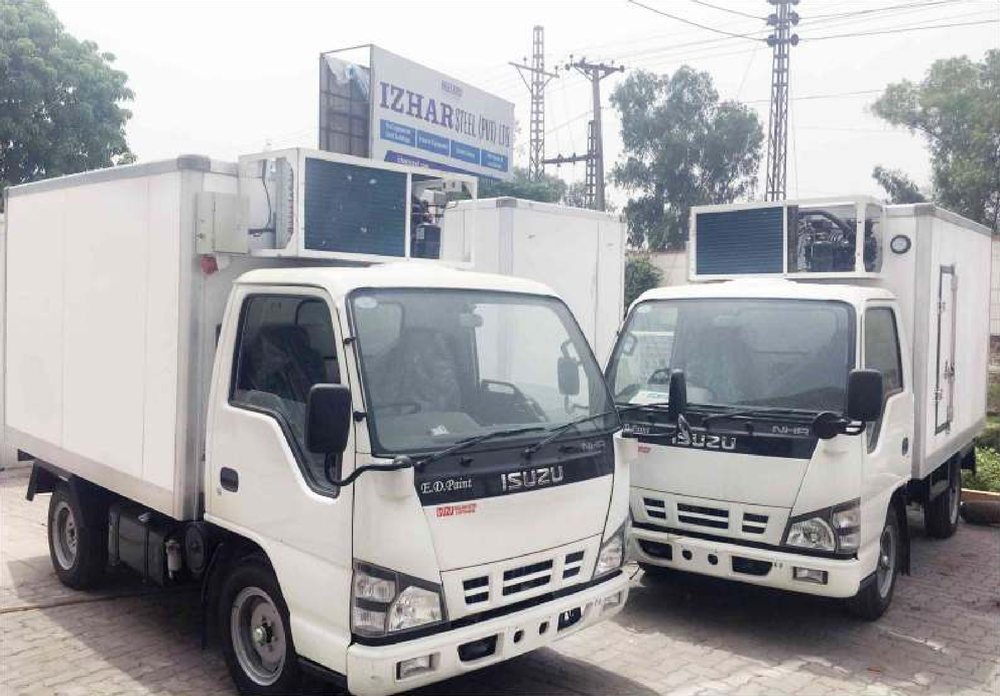
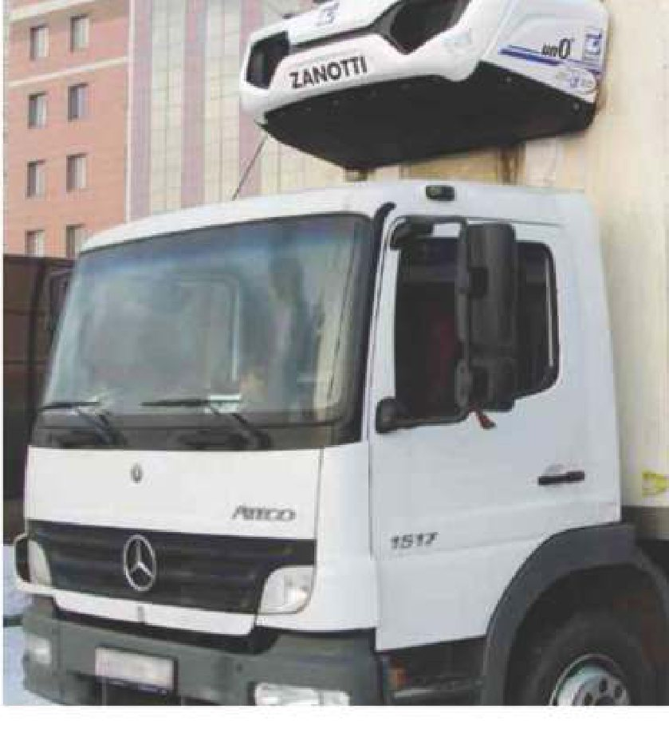

Refrigerated vehicles for Pakistan's cold chain — PIR truck bodies, Zanotti and Thermo King units.
A cold store only earns its temperature band if the load arrives at it cold. Izhar Foster builds the link in between: insulated truck bodies in our own PIR sandwich panel, fitted with refrigeration units from Zanotti (Italy) — the brochure-stated "King of Cold" — and Thermo King (USA) T-Series with 6,220 W heat capacity in diesel or electric drive. Built at our 277,460 sqft Lahore plant since 1959.
Cold-chain integrity isn't held by a single building — it's held end-to-end. Manufacturer chiller, outbound dock, refrigerated trailer, inbound dock at the DC, racked cold storage, despatch dock, retail backstore. A break anywhere is a break everywhere. The refrigerated vehicle is the moving link, and it's where most cold-chain failures actually happen — not because reefers are unreliable, but because they're routinely sized at "what was on offer" rather than what the route profile demands.
Izhar Foster builds the truck body and specifies the refrigeration unit as a single engineering scope. The body is PIR sandwich panel — the same envelope system in our cold stores, with the lighter weight and rigidity profile reefer applications need. The unit is selected from the Zanotti and Thermo King catalogues based on truck size, target band, ambient design point, and route. Two named technology partners. One supplier accountable.
Why PIR for the truck body
The reefer body is structural insulation that spends its life cycling temperature, vibrating, taking impact, and absorbing UV. Material choice is not cosmetic.
- Higher insulation per unit weight. PIR delivers a thermal conductivity of 0.022 W/m·K (BS EN 14509 aged) at densities of 40–45 kg/m³ — meaningfully better insulation per kilogram of body than PUR (0.024 W/m·K) or EPS (0.034 W/m·K). On a payload-constrained vehicle, every kilogram of insulation that doesn't translate to thermal performance is payload you don't carry.
- Fire class B1 (foam B2) per ASTM E84. PIR is self-extinguishing and char-forming. It does not propagate flame. It matters in a vehicle compartment carrying combustible cargo and operating in proximity to fuel and electrical loads.
- Dimensional stability under cycling. PIR's dimensional change is < 1% across the temperature swings a reefer body lives through. The panel does not pillow, sag, or open joints over years of cycling.
- Asbestos-free, low-water-absorbency (< 1% by volume). The body does not gain insulation-killing weight from washdown moisture or condensation.
- 50+ year material life. The body outlasts the chassis under it. PIR is not the limiting factor in vehicle replacement decisions.
The full PIR specification is documented on the PIR sandwich panels page. The same material flows through every cold envelope we build — store, vehicle body, processing room, ripening chamber.
Zanotti — the small-to-medium catalogue
Zanotti is Italian, branded in their own marketing as the "King of Cold", and our reference partner for the small-to-medium range of refrigerated vehicles. The Zanotti unit-by-truck-size matrix covers five product families:
| Zanotti family | Position in the range | Typical application |
|---|---|---|
| Direct Drive Invisible | Smallest — undermount or hidden install | Light commercial vehicles, retail last-mile |
| Battery | Stand-alone battery-driven | Short-distance distribution where engine drive isn't preferred |
| Direct Drive Split | Compressor on engine, evaporator in body | Standard small-to-medium reefer trucks |
| Large Direct Drive Split | Higher capacity split unit | Larger reefer trucks, multi-drop frozen |
| Direct Drive Monoblock | Single-block compact unit | Compact installations where split layout isn't possible |
Beyond the standard catalogue, Zanotti supplies special units, units for moving cold rooms, multi-temperature units, and trailer-class units for the largest reefer applications.
Thermo King T-Series — higher-capacity, diesel or electric
For higher-capacity applications and longer-haul reefer work, the Thermo King T-Series is our reference unit. Manufacturer-specified heat capacity is 6,220 W. Drive options are diesel (independent compressor on the truck) and electric (3-phase mains shore-power mode for parked/yarded vehicles). Many fleets specify dual-mode units to operate diesel on-route and electric on-depot — overnight power costs less than diesel idle, and the noise envelope at the depot is lower.
Multi-temperature reefer bodies
A multi-temperature reefer divides one body into two or more independently-controlled compartments — typically frozen plus chilled, or two chilled bands at different setpoints. This is a high-leverage configuration for distribution operators serving mixed retail (frozen ice cream + chilled dairy in one drop, for example). Engineering decisions that matter:
- Insulated bulkheads with heated frames. A bulkhead between a frozen and chilled zone faces a 25–30 K differential and will frost on the cold side if the frame is not heated. We specify the same heated-frame system used in our insulated doors for cold stores.
- Per-zone evaporator + shared condenser where appropriate. Each zone has its own evaporator sized for its own load and band. Condensing capacity can be shared between zones at appropriate ratios.
- Bulkhead position and mobility. Some operators specify movable bulkheads to flex the frozen-to-chilled split through the day. Movable bulkheads sacrifice some thermal performance for flexibility.
Where reefer transport sits in the cold chain
The vehicle is the link between every other cold-chain element we build. Pharma cold rooms at +2/+8 °C feed validated outbound trailers to distribution. Dairy finished-goods warehouses despatch chilled and frozen reefers to retail. Halal meat and poultry plants run blast-frozen exports under multi-temperature reefer scope. Mango and kinnow from fruit cold stores ship in pre-cooled chilled reefers. Ripened bananas reach retail on +13/+14 °C reefers. The vehicle is what makes the rest of the system mean anything.
Frequently asked questions
What refrigeration units does Izhar Foster install on truck bodies?
Two named technology partners: Zanotti (Italy) — the brochure-stated "King of Cold" — across the small-to-medium range with Direct Drive Invisible, Battery, Direct Drive Split, Large Direct Drive Split, and Direct Drive Monoblock units; and Thermo King (USA) T-Series for higher-capacity applications, with diesel and electric drive options. Special units, multi-temperature units, units for moving cold rooms, and trailer-class units are all available.
What is the heat capacity of the Thermo King T-Series?
Thermo King's T-Series heat upgrade routes engine coolant through a secondary coil built into the evaporator. On the T-600R and T-800R that more than doubles heating capacity on engine power, to 6,220 W, using the water heat kit; on the T-1000R it raises heating capacity by 46%, to 6,000 W, with the heat upgrade. No additional refrigerant charge is needed for either, so there is no environmental impact. An optional electric heater bar adds a further 1,900 W on all units running on electric stand-by. Final selection depends on truck size, target temperature, ambient design point, and route profile.
What's the truck body construction on an Izhar Foster reefer?
Truck bodies are built in PIR sandwich panel — the same panel system used in our cold stores, specified for the lighter weight and structural rigidity required on a moving vehicle. PIR delivers higher thermal insulation per unit weight than PUR or EPS, fire class B1 (foam B2) per ASTM E84, and dimensional stability across the temperature swings a reefer body experiences.
Can Izhar Foster supply multi-temperature reefer trucks?
Yes. Multi-temperature reefer trucks divide the body into two or more independently-controlled compartments — typical configurations are frozen plus chilled, or two chilled bands at different setpoints. Bulkheads are insulated panels with heated frames; refrigeration is sized per-zone with shared condensing capacity where appropriate.
Do Izhar Foster reefer units work on diesel and electric?
Yes. The Thermo King T-Series we specify offers both diesel and electric drive. Diesel-drive runs an independent compressor on the truck. Electric-drive (stand-by / shore-power mode) runs from a 3-phase mains connection while the truck is parked — useful for overnight depots and yard staging. Many fleets specify dual-mode units for operational flexibility.
What size truck bodies does Izhar Foster build?
From small light-commercial vehicles up through articulated trailers. The Zanotti unit-by-truck-size matrix in our scope covers Direct Drive Invisible (smallest), Battery, Direct Drive Split, Large Direct Drive Split, Direct Drive Monoblock (compact/medium), and trailer units (largest). Special units cover moving cold rooms and other one-off applications.
How the vehicle is built — and how the unit gets chosen.
Two things decide whether a reefer holds its band: the envelope around the cargo and the machine bolted to the front of it. We build the first and specify the second, in one scope, at the Multan Road plant. Below is the programme as it runs — the body, the Thermo King heat options, and the Zanotti selection tables we size from.

One scope: body, unit, and the cargo-area detail
Refrigerated vehicles built at Izhar Steel are fitted with equipment from top-of-the-line manufacturers — Zanotti (Italy) and Thermo King (USA). From frozen food through fresh fruit and dairy, the bodies are as diverse as the markets they serve. Body type, size and configuration are specified to the job, including product-specific cooling and cargo-area features chosen to protect the load and the investment behind it.
That last clause carries more weight than it reads. A body sized for frozen meat and a body sized for chilled dairy differ in insulation thickness, evaporator placement, airflow path, drainage, and interior lining — and a reefer specified as a generic box will underperform on both. The cargo-area detail is where the specification either earns its money or quietly loses it.

Thermo King T-Series — the heat side of the specification
Where a client needs maximum up-time and full cargo protection under extreme low ambient conditions, the Thermo King T-Series is our reference unit. The counter-intuitive part of reefer engineering in a cold climate is that the hard problem stops being cooling and starts being heating — a load held at +2 °C in a −5 °C night needs heat put into the box, not taken out.
Thermo King's answer is to capture heat from the unit's own engine coolant. A secondary coil built into the evaporator routes coolant through the airstream, giving heating capacities up to double the conventional values. The published options:
- T-600R and T-800R — heating capacity on engine power is more than doubled, to 6,220 W, using the water heat kit.
- T-1000R — increased by 46%, to 6,000 W, with the heat upgrade.
- No additional refrigerant charge is needed for any of the above — so there is no environmental impact from the heat upgrade, and no change to the leak-check or charge-log regime.
- Electric heater bars are available as an option, giving an additional 1,900 W on all units running on electric stand-by.
Read those together and the design point is clear: the water heat kit works while the engine runs, and the heater bars cover the vehicle once it is parked and plugged in. A depot that stages loaded vehicles overnight needs both, and specifying only the first is the common and expensive mistake.

Built on Multan Road
Bodies are fabricated and fitted at our Lahore plant — the same 277,460 sq ft complex that makes the PIR panel going into our cold stores. Chassis arrive, bodies are built up in panel, the unit is mounted, and the vehicle leaves as a finished cold-chain asset. Panel stock, body build and unit fitting sit in one yard, which is why body and refrigeration can be quoted as a single scope rather than two.


The two photographs below are the finished article: completed vehicles outside the plant, and the inside of a body showing the evaporator and the PVC strip curtain at the door. The strip curtain is worth pausing on — it is the cheapest infiltration control on the vehicle, and on a multi-drop route where the door opens fifteen times a day it does more for band-holding than any amount of extra compressor.


Zanotti selection tables — what actually fits your body
Zanotti brands itself the "King of Cold", and its catalogue is organised by how much insulated body volume a unit will hold down, at a given box setpoint, against a given outside temperature. Three numbers govern every row:
- Tc — the box setpoint you need to hold inside the body.
- Ta — the ambient design temperature outside it. Pakistan sizing is a +40 °C conversation in Multan, Sukkur and interior Sindh, and a +30 °C one only in the northern winter. Read the +40 °C column first.
- m³ — the insulated body volume the unit will hold at that combination. The metre figure beside each family is the body length it is designed around.
The pattern to notice: every family loses roughly a quarter to a third of its capacity moving from +30 °C to +40 °C ambient, and loses again moving from 0 °C to −20 °C box. A unit picked off the +30 °C / 0 °C figure and then run frozen through a Multan summer is not marginal — it is roughly half the machine the job needs.
| Unit family | Body length | Tc 0 °C / Ta +30 °C | Tc 0 °C / Ta +40 °C | Tc −20 °C / Ta +30 °C | Tc −20 °C / Ta +40 °C |
|---|---|---|---|---|---|
| Direct Drive Invisible | 3.5–4 m | 10–21 m³ | 7–16 m³ | 10–17 m³ | 7–12 m³ |
| Battery Drive † | 4 m | 4.5–8 m³ | 3–6 m³ | 4 m³ | 3 m³ |
| Direct Drive Split | 4–5 m | 12–28 m³ | 9–21 m³ | 10–21 m³ | 8–16 m³ |
| Large Direct Drive Split | 5–7 m | 28–54 m³ | 20–38 m³ | 21–41 m³ | 16–35 m³ |
| Direct Drive Monoblock | 5–7 m | 22–50 m³ | 15–35 m³ | 19–35 m³ | 13–24 m³ |
† The Battery Drive family is catalogued at a Tc of +6 °C / 0 °C rather than 0 °C flat; its chilled column is read on that basis.
| Unit family | Body length | Tc 0 °C / Ta +30 °C | Tc 0 °C / Ta +40 °C | Tc −20 °C / Ta +30 °C | Tc −20 °C / Ta +40 °C |
|---|---|---|---|---|---|
| Diesel Monoblock | 5.5–8.5 m + | 34–80 m³ | 23–60 m³ | 30–70 m³ | 19–52 m³ |
| Diesel Undermount | 7.5–8.5 m + | 65–78 m³ | 48–57 m³ | 54–67 m³ | 38–50 m³ |
| Multi-temperature ‡ | 4–8.5 m + | 16–60 m³ | 11–43 m³ | 17–48 m³ | 12–34 m³ |
| Trailer unit | 15 m | 90 m³ | 80 m³ | 75 m³ | 60 m³ |
‡ The brochure prints the multi-temperature row in Fahrenheit — 32 °F and −4 °F. Those are 0 °C and −20 °C, so the row is shown here on the same Celsius basis as every other family.
| Unit family | Body length | Tc +10 to −5 °C / Ta +30 °C | Tc −15 to −25 °C / Ta +30 °C |
|---|---|---|---|
| Units for moving cold rooms | 4–17 m | 9–198 m³ | 4–177 m³ |

These envelopes narrow the choice to a family; they do not finish the job. A route with fifteen door openings a day, a hot-loaded product, or a 6-hour trunk leg will land differently inside the same band, because door infiltration and pull-down are load items the catalogue cannot see. Give us the route profile and the product, and we will size it properly — the same 5-component method we use for a cold store, applied to a box that moves. Our load calculator covers the static side if you want to sanity-check the fixed end of the chain first.
The reefer is the link. Here's what it connects.
Sizing the cold chain end-to-end? Start with the cold store.
Our cost calculator covers the static cold-chain envelope — store, panels, refrigeration. For the moving link, talk to us about reefer body and unit selection.
Open the cost calculator →